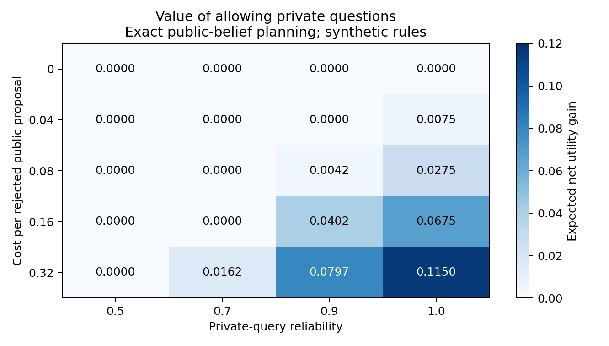
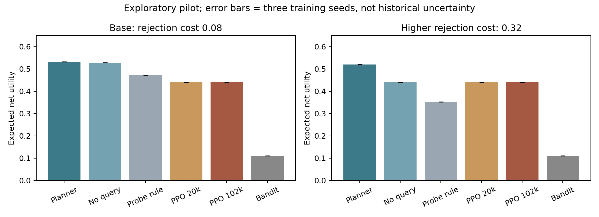
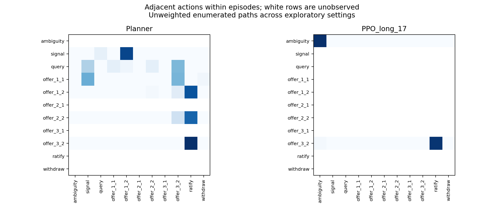

Exploratory pilot only. Real source text motivates discourse functions; numerical utilities, private types and responses are synthetic assumptions. No untouched historical test set or claim of actual diplomatic effects.
Questions need not be useful when offers cheaply reveal acceptance conditions. Exact belief planning identifies a boundary where rejection costs and query reliability make private inquiry valuable. Compare learned behavior with this attainable public-information benchmark; do not assume PPO will win.


Returns are undiscounted terminal utility minus all costs. Error bars describe training-seed variability. Planner knows public transition rules but never receives the true type.
| Condition | Policy | Return | Seed SD | Agreement | Queries |
|---|---|---|---|---|---|
| grid_r0_q0.9 | Planner | 0.5675 | - | 100.0% | 0.00 |
| grid_r0_q0.9 | Planner_no_query | 0.5675 | - | 100.0% | 0.00 |
| grid_r0_q0.9 | probe_then_offer | 0.5125 | - | 100.0% | 0.00 |
| grid_r0_q0.9 | query_first | 0.4898 | - | 100.0% | 1.00 |
| grid_r0_q0.9 | robust | 0.4400 | - | 100.0% | 0.00 |
| grid_r0_q0.9 | Random | -0.0097 | - | 8.8% | 0.36 |
| grid_r0_q0.9 | Bandit | 0.1100 | 0.0000 | 0.0% | 0.00 |
| grid_r0_q0.9 | PPO | 0.4400 | 0.0000 | 100.0% | 0.00 |
| grid_r0_q0.9 | PPO_long | 0.4400 | 0.0000 | 100.0% | 0.00 |
| grid_r0_q0.9 | PPO_long_belief_mask_only | 0.4400 | 0.0000 | 100.0% | 0.00 |
| base | Planner | 0.5318 | - | 100.0% | 1.00 |
| base | Planner_no_query | 0.5275 | - | 100.0% | 0.00 |
| base | probe_then_offer | 0.4725 | - | 100.0% | 0.00 |
| base | query_first | 0.4858 | - | 100.0% | 1.00 |
| base | robust | 0.4400 | - | 100.0% | 0.00 |
| base | Random | -0.0717 | - | 8.8% | 0.36 |
| base | Bandit | 0.1100 | 0.0000 | 0.0% | 0.00 |
| base | PPO | 0.4400 | 0.0000 | 100.0% | 0.00 |
| base | PPO_long | 0.4400 | 0.0000 | 100.0% | 0.00 |
| base | PPO_long_belief_mask_only | 0.4400 | 0.0000 | 100.0% | 0.00 |
| grid_r0.32_q0.9 | Planner | 0.5198 | - | 100.0% | 1.00 |
| grid_r0.32_q0.9 | Planner_no_query | 0.4400 | - | 100.0% | 0.00 |
| grid_r0.32_q0.9 | probe_then_offer | 0.3525 | - | 100.0% | 0.00 |
| grid_r0.32_q0.9 | query_first | 0.4738 | - | 100.0% | 1.00 |
| grid_r0.32_q0.9 | robust | 0.4400 | - | 100.0% | 0.00 |
| grid_r0.32_q0.9 | Random | -0.2577 | - | 8.8% | 0.36 |
| grid_r0.32_q0.9 | Bandit | 0.1100 | 0.0000 | 0.0% | 0.00 |
| grid_r0.32_q0.9 | PPO | 0.4400 | 0.0000 | 100.0% | 0.00 |
| grid_r0.32_q0.9 | PPO_long | 0.4400 | 0.0000 | 100.0% | 0.00 |
| grid_r0.32_q0.9 | PPO_long_belief_mask_only | 0.4400 | 0.0000 | 100.0% | 0.00 |
| no_agreement_hard | Planner | 0.3650 | - | 50.0% | 0.00 |
| no_agreement_hard | Planner_no_query | 0.3650 | - | 50.0% | 0.00 |
| no_agreement_hard | probe_then_offer | 0.3100 | - | 50.0% | 0.00 |
| no_agreement_hard | query_first | 0.3045 | - | 45.0% | 1.00 |
| no_agreement_hard | robust | -0.0200 | - | 50.0% | 0.00 |
| no_agreement_hard | Random | -0.1352 | - | 5.2% | 0.36 |
| no_agreement_hard | Bandit | 0.1100 | 0.0000 | 0.0% | 0.00 |
| no_agreement_hard | PPO | 0.0025 | 0.0000 | 50.0% | 0.00 |
| no_agreement_hard | PPO_long | 0.2100 | 0.0130 | 50.0% | 0.00 |
| no_agreement_hard | PPO_long_belief_mask_only | 0.2100 | 0.0130 | 50.0% | 0.00 |
{
"roundtrip_matches": 22,
"roundtrip_total": 22,
"transition_matches": 44,
"transition_total": 44,
"counterfactual_matches": 15,
"counterfactual_total": 15,
"source_evidence_exact": 17,
"source_evidence_total": 18,
"billed_usd": 0.006923,
"unresolved_usd": 0,
"api_calls": 77
}These are model-to-model roundtrip checks and authored synthetic semantic tests, not human-labeled source accuracy. In the source audit, “if” was sometimes overinterpreted as a reciprocal exchange; model labels require review. One excerpt was not an exact source substring.

Full utterances, interpreted terms, observations, reward components and termination reasons are in trajectories.jsonl; selected paths in discourse_cases.json. Count matrices exclude cross-episode transitions. Multiple parameter settings from C-012 remain one historical motif.
Retain all pilot results. Formal submission work still needs event/document-group splits and untouched evaluation, independent human discourse review, full discount/entropy/reward ablations, richer source-grounded contexts, reproducibility by a teammate, and a four-page paper. Belief masking alone does not remove acceptance histories. The signal effect and rejection penalties require separate sensitivity analysis rather than historical interpretation.